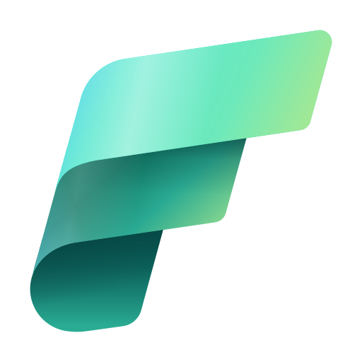

üè¢ Microsoft Repositories
Access Microsoft Fabric tools and resources hosted in Microsoft GitHub repositories, which may include non-official or unsupported projects
Access Microsoft Fabric tools and resources hosted in Microsoft GitHub repositories, which may include non-official or unsupported projects